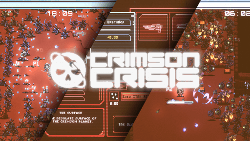
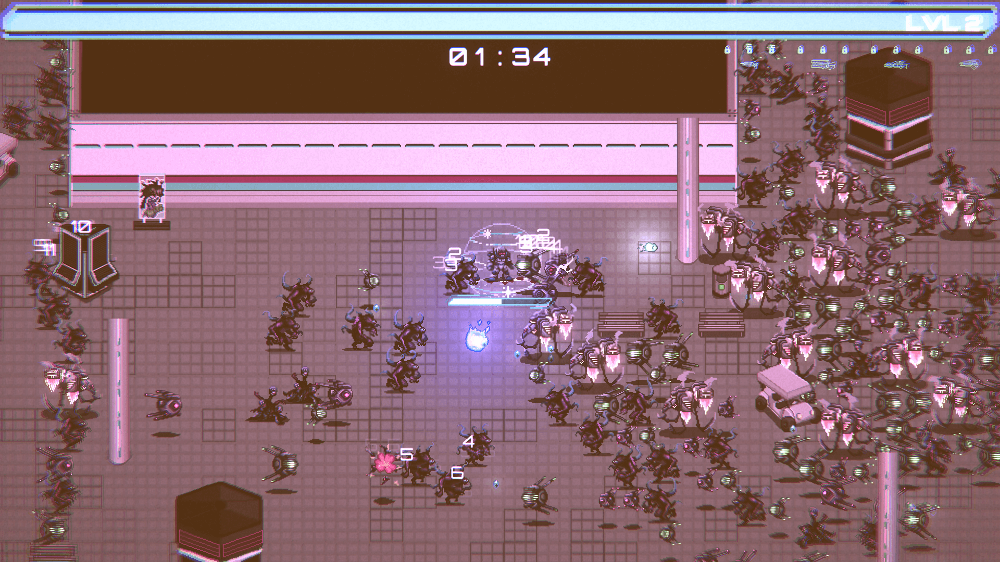
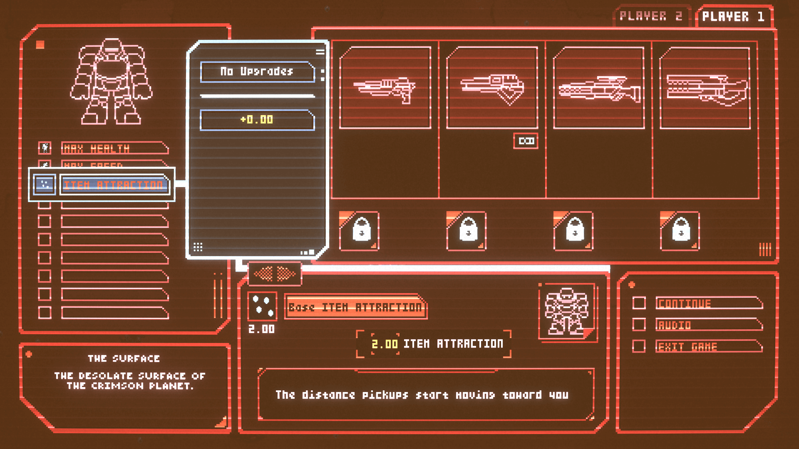
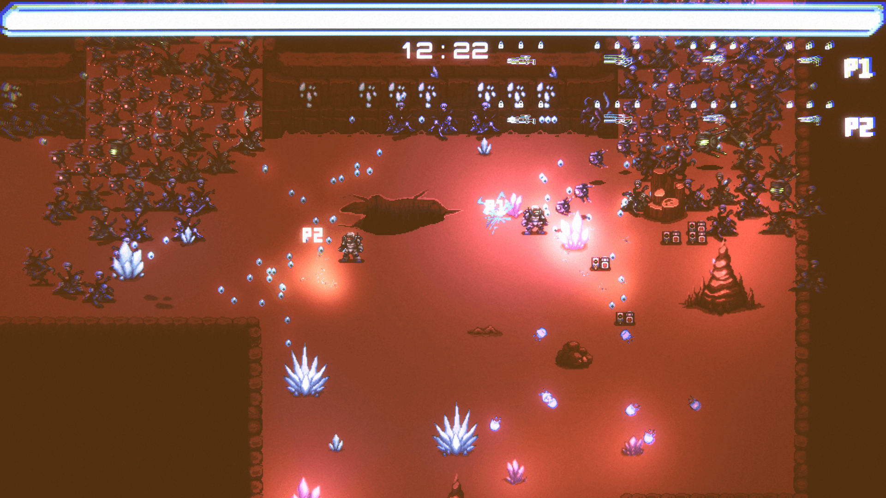
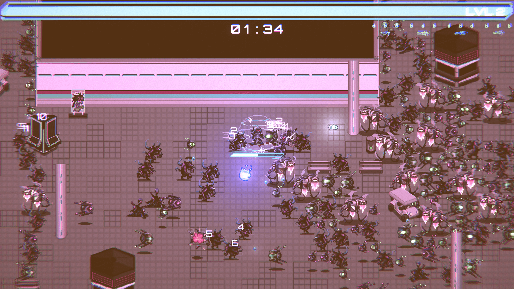
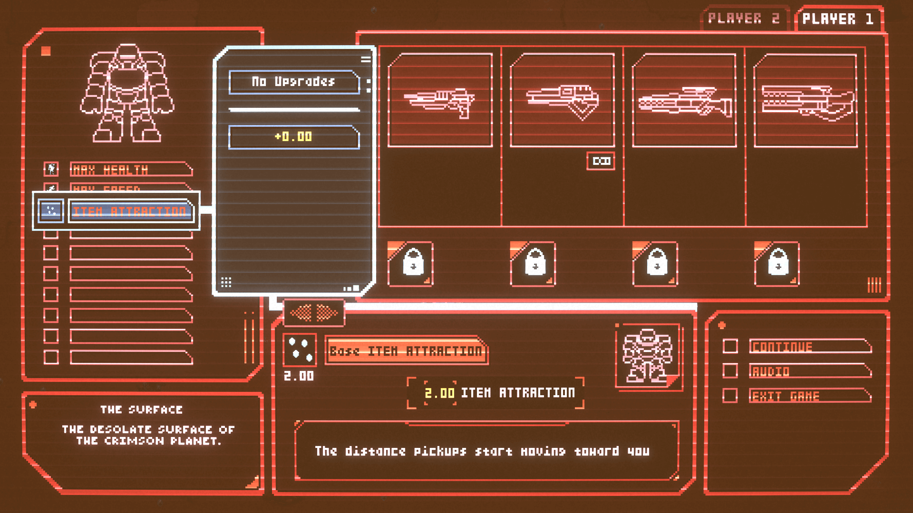
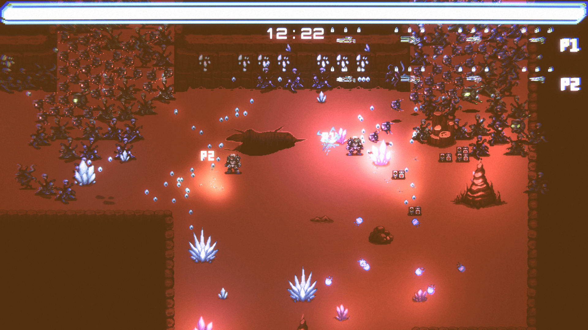
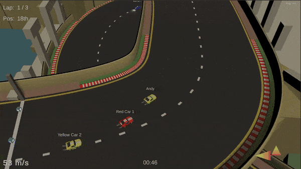
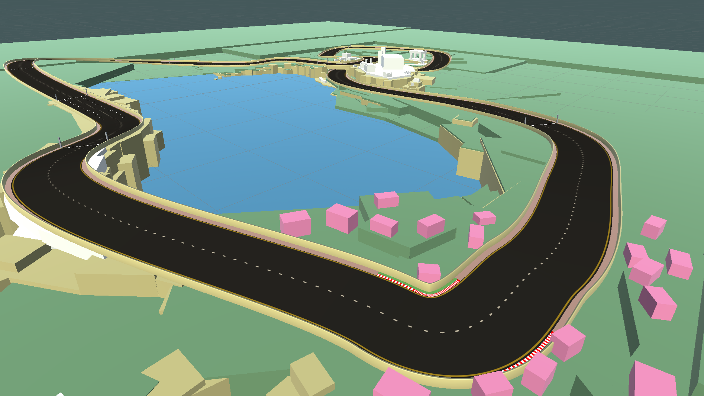

Andrew (Andy) Pickard
Hello!
I'm Andy, a passionate professional gameplay and tools developer who loves to design and develop game-focused applications and is always striving to improve and learn.
I primarily use C# in the Unity game engine both professionally and for personal projects, with the occasional foray into C++ on the side.
You can get in touch with me at andypick1993@gmail.com
I'm Andy, a passionate professional gameplay and tools developer who loves to design and develop game-focused applications and is always striving to improve and learn.
I primarily use C# in the Unity game engine both professionally and for personal projects, with the occasional foray into C++ on the side.
You can get in touch with me at andypick1993@gmail.com
Skills
I have experience working with the following:
| Languages | |
|---|---|
| Versioning | Git, GitHub, GitLab |
| Unity Packages | FishNet, Netcode, Odin, ML Agents, Cinemachine, Input System, Splines, PlayFab, SteamworksAPI (.NET), Localisation, Addressables |
| Project Management | Agile, Asana, Lucid, Mila, Miro, Obsidian |
Background
I have a BSc in Psychology from the University of York, after which I worked
as a
Graphics
Designer for a number of years. During covid I took the opportunity to go get a MSc in Software Development from Queens' University Belfast.
Following graduation, I started work as a Full-Stack Web Developer while
working on my game development skills in my own time.
After a year or so I got my first role as a Unity Developer where I have worked ever since and had the pleasure to work on some of the following projects!
After a year or so I got my first role as a Unity Developer where I have worked ever since and had the pleasure to work on some of the following projects!
Projects
Crimson Crisis
 Crimson Crisis (on Steam) is a 2D bullet-hell roguelite, featuring many varied guns and passive improvements you can earn, all of which can have up to 3 attachments each, from a vast pool of modifications which from increasing your movement speed to on-hit applying a stacking poison that explodes in a puddle of caustic goo, spreading the poison to all enemies within.
It also has local co-op and infinite procedurally generated levels.
What I worked on:
Everything, except the creation of art assets, visual and sound effects including:- Procedural level generation + related tools & documentation
- UI & Scene Management
- Enemy spawning (pooling) & behaviour
- Weapons system
- Status effect system
- Steamworks integration
- Setup assets in engine (+ any needed editing)
- Optimisation
 





Arcade Racer
Arcade Racer is the placeholder name for the unpublished 3D arcade-style racing game that the team and I that worked on Crimson Crisis moved to after the end of Crimson Crisis' development cycle.
It features:
- ML Agent trained AI to race against players (with DigitalOcean VMs to train the agents)
- Physics based car controller
- Customisable cars
- Online multiplayer (dedicated servers) with Lobbies, In-game messaging & Matchmaking
- Track editor tool (using splines and mesh generation) for building racetracks & scenery

